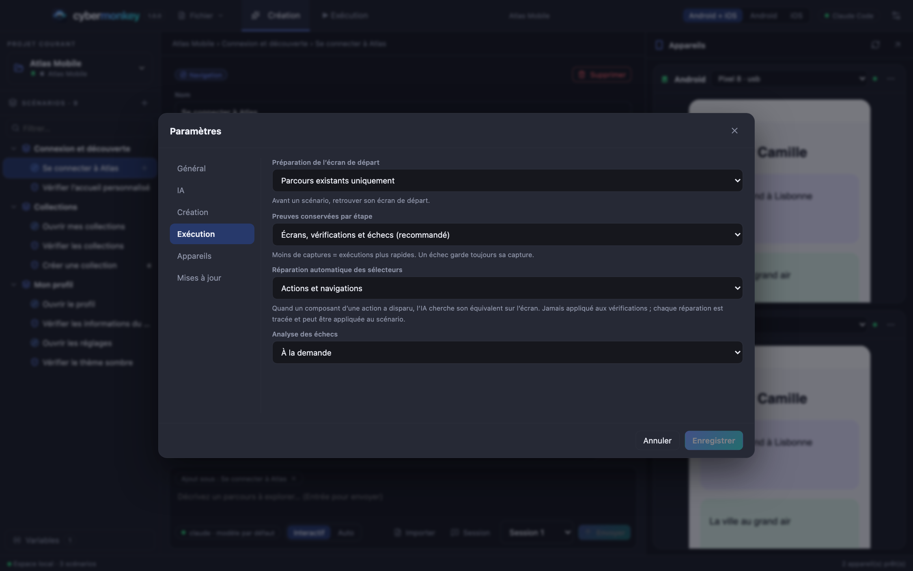
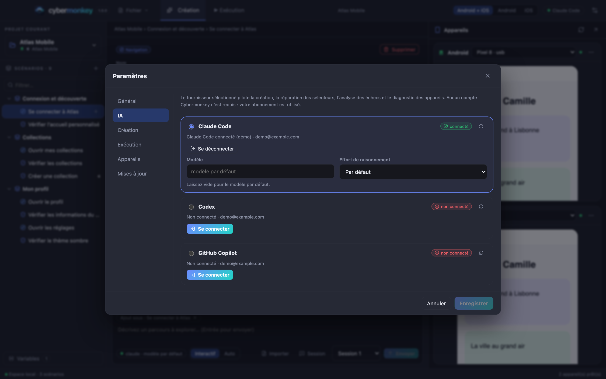

AideHelp
Aide et dépannageHelp and troubleshooting
Démarrage rapideQuick start
- Installez l’application (ci-dessous) et lancez-la. Dans Paramètres → IA, connectez Claude Code, Codex ou Copilot.Install the app (below) and launch it. In Settings → AI, sign in to Claude Code, Codex or Copilot.
- Fichier → Nouveau projet : nom, plateformes, puis « Détecter » l’application sur un appareil branché.File → New project: name, platforms, then “Detect” the app on a plugged-in device.
- Onglet Création : décrivez un parcours dans le panneau IA, ou cliquez « Enregistrer » et naviguez sur le téléphone.Creation tab: describe a journey in the AI panel, or click “Record” and use the phone.
- Validez la synthèse, puis onglet Exécution → « Nouvelle » campagne → « Tout exécuter ».Accept the review, then Execution tab → “New” campaign → “Run all”.
InstallationInstallation
macOS (Apple Silicon) : téléchargez le DMG depuis la dernière release, glissez Cybermonkey dans Applications. L’app est signée localement sans notarisation : au premier lancement, ouvrez Réglages Système → Confidentialité et sécurité et choisissez « Ouvrir quand même ». Windows (x64) : téléchargez Cybermonkey-<version>-win-x64.exe depuis la même page et lancez-le (installation pour l’utilisateur courant, dossier modifiable). L’installateur n’est pas signé : SmartScreen demande Informations complémentaires → Exécuter quand même. Autres systèmes : compilez depuis les sources.macOS (Apple Silicon): download the DMG from the latest release, drag Cybermonkey into Applications. The app is locally signed without notarization: on first launch open System Settings → Privacy & Security and choose “Open Anyway”. Windows (x64): download Cybermonkey-<version>-win-x64.exe from the same page and run it (per-user install, changeable folder). The installer is not code-signed: SmartScreen asks for More info → Run anyway. Windows (x64): download Cybermonkey-<version>-win-x64.exe from the same page and run it (per-user install, changeable folder). The installer is not code-signed: SmartScreen asks for More info → Run anyway. Other systems: build from source.
git clone https://github.com/pickywawa/cybermonkey.git
cd cybermonkey
npm ci
npm run dev # développementdevelopment
npm run dist -- --mac dmg --arm64 # installateur macOSmacOS installerNode.js 22.12 ou plus est requis.Node.js 22.12 or later is required.
Android
- Installez les Android Platform Tools (
adb) et un JDK :brew install --cask android-platform-tools temurin(macOS),winget install Google.PlatformTools EclipseAdoptium.Temurin.21.JDK(Windows). Android Studio convient aussi : son SDK (%LOCALAPPDATA%\Android\Sdk) et son JDK intégré sont détectés automatiquement.Install Android Platform Tools (adb) and a JDK:brew install --cask android-platform-tools temurin(macOS),winget install Google.PlatformTools EclipseAdoptium.Temurin.21.JDK(Windows). Android Studio works too: its SDK (%LOCALAPPDATA%\Android\Sdk) and bundled JDK are detected automatically. - Activez les options pour les développeurs et le débogage USB sur le téléphone, branchez-le et acceptez l’autorisation RSA.Enable Developer options and USB debugging on the phone, plug it in and accept the RSA prompt.
- Les émulateurs démarrés sont détectés aussi. Vérifiez avec
adb devices.Running emulators are detected too. Check withadb devices.
iOS
- Simulateurs : installez Xcode et ses runtimes, démarrez un simulateur ; aucune signature n’est nécessaire.Simulators: install Xcode and its runtimes, boot a simulator; no signing needed.
- iPhone physique : activez le mode développeur, faites confiance à l’ordinateur, laissez Xcode préparer l’appareil, puis renseignez dans Paramètres → Appareils le Team ID Apple et un Bundle ID WebDriverAgent couvert par votre profil Development (base +
.xctrunner). Ajoutez votre compte Apple dans Xcode.Physical iPhone: enable Developer Mode, trust the computer, let Xcode prepare the device, then set in Settings → Devices the Apple Team ID and a WebDriverAgent Bundle ID covered by your Development profile (base +.xctrunner). Add your Apple account in Xcode. - Windows / Linux : iOS n’est pas pris en charge. Les simulateurs et la compilation de WebDriverAgent exigent macOS et Xcode. Un mode avancé existe pour un iPhone (iOS 18+) avec un WDA préinstallé ou externe et un tunnel RemoteXPC (voir la documentation Appium XCUITest) ; il n’est ni testé ni garanti par Cybermonkey.Windows / Linux: iOS is not supported. Simulators and building WebDriverAgent require macOS and Xcode. An advanced mode exists for an iPhone (iOS 18+) with a preinstalled or external WDA and a RemoteXPC tunnel (see the Appium XCUITest docs); it is neither tested nor guaranteed by Cybermonkey.

Configurer l’IASet up the AI
| FournisseurProvider | ConnexionSign-in |
|---|---|
| Claude Code | Paramètres → IA → « Se connecter » (navigateur), ou variable ANTHROPIC_API_KEY avant le lancement. Le binaire est embarqué.Settings → AI → “Sign in” (browser), or ANTHROPIC_API_KEY before launch. The binary is bundled. |
| Codex | « Se connecter » : code appareil affiché dans l’app.“Sign in”: device code shown in the app. |
| GitHub Copilot | « Se connecter » : saisissez le code sur github.com/login/device.“Sign in”: enter the code at github.com/login/device. |

Réglages utilesUseful settings
| RéglageSetting | EffetEffect |
|---|---|
| Mode d’explorationExploration mode | Interactif : l’IA peut poser des questions. Auto : aucune question, la proposition reste à valider.Interactive: the AI may ask questions. Auto: no questions, the proposal still needs review. |
| Exploration rapideFast exploration | Raisonnement réduit pendant la navigation. À désactiver si les propositions manquent de finesse.Reduced reasoning while navigating. Turn off if proposals lack finesse. |
| Preuves conservées par étapeEvidence per step | Moins de captures = exécutions plus rapides.Fewer captures = faster runs. |
| Réparation automatique des sélecteursAutomatic selector repair | Actions et navigations uniquement.Actions and navigations only. |
| Préparation de l’écran de départStart-screen preparation | Désactivée, parcours existants, ou IA en dernier recours.Off, existing routes, or AI as a last resort. |
| ImprévusInterruptions | Complet (gestionnaires, dialogues système, IA en dernier recours), gestionnaires et app disparue seulement, ou désactivé.Full (handlers, system dialogs, AI as a last resort), handlers and vanished app only, or off. |
| Rejouer un pas en échecRetry a failed step | Un second essai court quand le composant est introuvable ou la vérification échoue ; réussi au 2e essai = « instable ».A short second attempt when the component is not found or the check fails; passed on the 2nd attempt = “unstable”. |
| Vidéo des scénarios en échecVideo of failing scenarios | Gardée seulement si le scénario échoue ; désactivable.Kept only if the scenario fails; can be turned off. |
| EnvironnementEnvironment | Sélecteur dans la barre latérale ; variables par environnement dans « Variables ».Selector in the sidebar; per-environment variables in “Variables”. |
MCP
Cybermonkey embarque un serveur MCP, activé par défaut et local (127.0.0.1) : une IA externe (Claude Code, Cursor…) peut lire vos scénarios, trouver le chemin vers une étape, piloter les téléphones, rejouer des éléments, créer et vérifier des scénarios. Réglages → MCP : activation, port, jeton, et chaque outil à cocher/décocher par groupe.Cybermonkey embeds an MCP server, on by default and local (127.0.0.1): an external AI (Claude Code, Cursor…) can read your scenarios, find the path to a step, drive the phones, replay items, and create and verify scenarios. Settings → MCP: on/off, port, token, and every tool toggleable within its group.
claude mcp add --transport http cybermonkey http://127.0.0.1:4750/mcp --header "Authorization: Bearer <token>"DépannageTroubleshooting
Mon appareil n’apparaît pasMy device does not show up
Menu « ⋯ » de la carte de l’appareil → Diagnostic : chaque ligne rouge donne la cause et le correctif. Android : adb devices doit afficher « device » (pas « unauthorized »). iOS : mode développeur, confiance, Xcode ouvert une fois.Device card “⋯” menu → Diagnostics: each red row gives the cause and the fix. Android: adb devices must show “device” (not “unauthorized”). iOS: Developer Mode, trust, Xcode opened once.
« Exploration en cours… » ne progresse pas“Exploring…” does not progress
Le message affiche l’étape en cours. Si la connexion à l’appareil dépasse 3 minutes, une erreur indique de rouvrir son diagnostic. Consultez ~/Library/Application Support/Cybermonkey/logs/cybermonkey.log. Un reste d’agent iOS d’une session précédente est nettoyé automatiquement au lancement.The message shows the current step. If connecting to the device exceeds 3 minutes an error asks you to open its diagnostics. Check ~/Library/Application Support/Cybermonkey/logs/cybermonkey.log. A leftover iOS agent from a previous session is cleaned up on launch.
Le rejeu est « bloqué »The replay is “blocked”
L’app redémarre sur un autre écran que celui où l’exploration a commencé. Explorez depuis l’écran de lancement, ou activez la préparation de l’écran de départ.The app restarts on a different screen than where the exploration started. Explore from the launch screen, or enable start-screen preparation.
« Écran destination non confirmé »“Destination screen not confirmed”
Les repères de l’écran cible ne sont pas tous présents. Ouvrez la navigation → « Écran de destination » : gardez des repères stables (titre, composant propre à l’écran), retirez ceux qui changent (compteurs, dates, platform_view[n]).Not all of the target screen’s markers are present. Open the navigation → “Destination screen”: keep stable markers (title, a component specific to the screen), remove those that change (counters, dates, platform_view[n]).
Une étape est « ignorée : à compléter »A step is “skipped: to complete”
Elle n’a pas de variante pour cet OS. Cliquez « Compléter avec l’IA » dans l’éditeur, ou associez un composant du miroir. Si l’étape n’existe que sur un OS, décochez l’autre dans « S’applique à ».It has no variant for this OS. Click “Complete with AI” in the editor, or bind a component from the mirror. If the step exists on one OS only, untick the other under “Applies to”.
iOS : « Connexion iOS impossible » / signatureiOS: “iOS connection impossible” / signing
Vérifiez Team ID, Bundle ID WDA et compte Apple dans Xcode (Diagnostic → Signature WDA). Pour un simulateur, aucune signature n’est requise.Check Team ID, WDA Bundle ID and your Apple account in Xcode (Diagnostics → WDA signing). A simulator needs no signing.
Où se trouvent mes projets ?Where are my projects?
Dans le dossier choisi dans Paramètres → Général (par défaut ~/Documents/Cybermonkey/Projects). « Afficher le dossier » dans le menu du projet l’ouvre.In the folder set in Settings → General (default ~/Documents/Cybermonkey/Projects). “Show folder” in the project menu opens it.
Comment mettre à jour ?How do I update?
L’application vérifie les releases stables au démarrage et toutes les 4 heures ; Paramètres → Mises à jour permet de vérifier, télécharger (empreinte SHA-256 contrôlée) et installer.The app checks stable releases at startup and every 4 hours; Settings → Updates lets you check, download (SHA-256 verified) and install.
Une popup bloque mon testA popup blocks my test
Créez un gestionnaire d’imprévu : un scénario dont vous cochez « Gestionnaire d’imprévu », avec les repères de la popup et les pas pour la fermer. Il se déclenche seul quand un pas échoue alors que la popup est affichée, puis le pas est rejoué. Voir Fonctionnalités → Imprévus.Create an interruption handler: a scenario where you tick “Interruption handler”, with the popup’s markers and the steps to close it. It runs by itself when a step fails while the popup is showing, then the step is replayed. See Features → Interruptions.
Un pas est marqué « instable »A step is marked “unstable”
Il n’a réussi qu’au deuxième essai : il fonctionne, mais pas de façon fiable (rendu lent, animation, texte qui change, sélecteur fragile). Le tableau Progression → Stabilité montre son historique ; l’outil MCP audit_selectors repère les sélecteurs fragiles.It only passed on the second attempt: it works, but not reliably (slow render, animation, changing text, fragile selector). Progress → Stability shows its history; the MCP tool audit_selectors spots fragile selectors.
La vidéo d’un échec n’apparaît pasThe video of a failure does not show
Réglage Paramètres → Exécution → Vidéo. Sur un iPhone réel, l’enregistrement exige ffmpeg (brew install ffmpeg). Au-delà d’environ 30 Mo, la vidéo est abandonnée.Setting Settings → Execution → Video. On a real iPhone, recording needs ffmpeg (brew install ffmpeg). Above about 30 MB the video is dropped.
Comment lancer sur la recette plutôt que la préprod ?How do I run on staging rather than pre-prod?
Choisissez l’environnement dans le sélecteur de la barre latérale (ou avec l’outil MCP select_environment) : ses variables remplacent les variables communes pour la création, l’exécution et les essais.Pick the environment in the sidebar selector (or with the MCP tool select_environment): its variables replace the common ones for creation, runs and tries.
Contact et contributionContact and contributing
Signalez un problème sur GitHub en précisant la version, l’OS hôte et cible, l’étape concernée et un extrait sans identifiants du journal ou de la trace d’exploration.Report an issue on GitHub with the version, host and target OS, the step involved and an excerpt without credentials of the log or exploration trace.